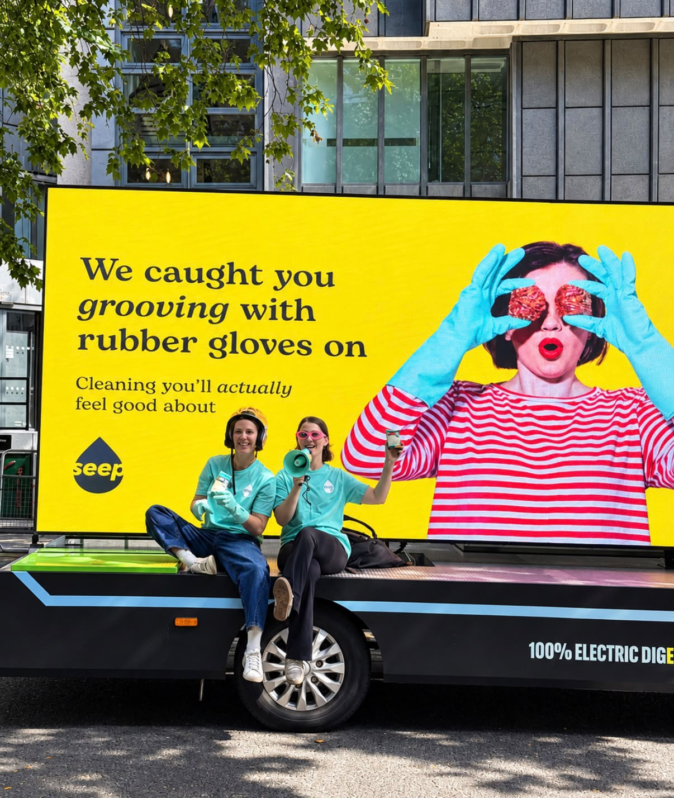
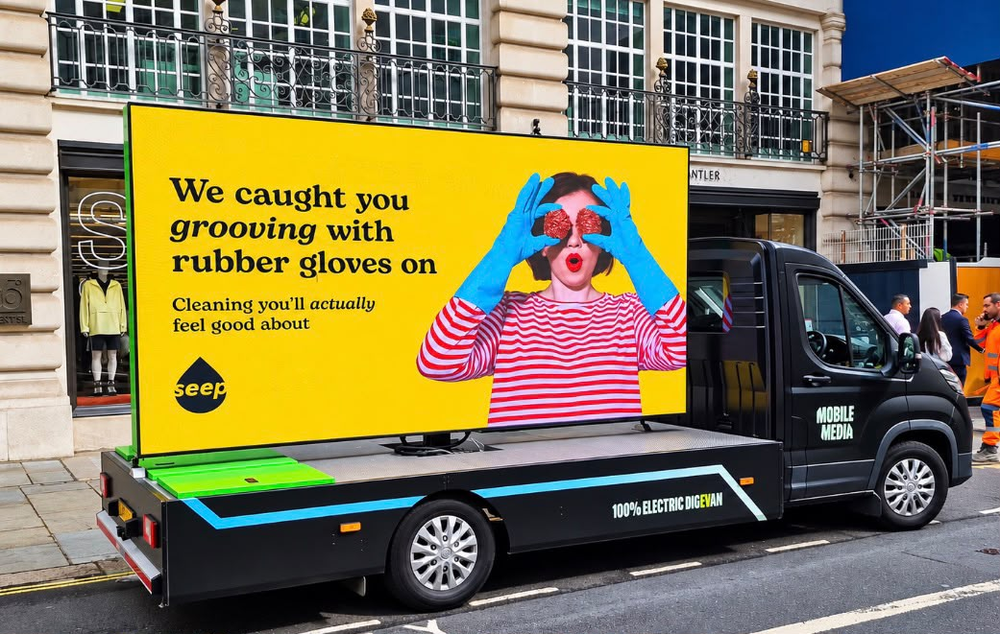
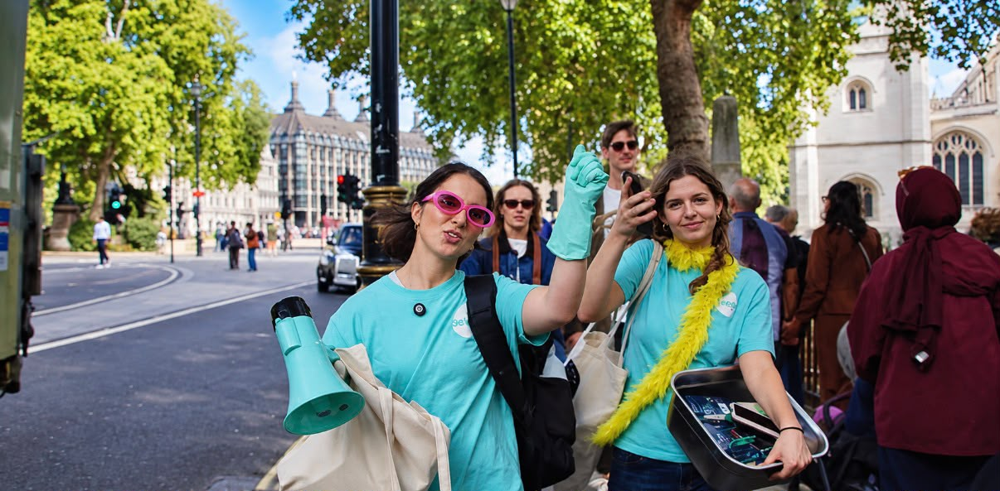

Challenge
A challenger cleaning brand needed to be noticed beyond the shelf.
Case study · Seep · London · 24 September 2026
Seep’s first OOH campaign used an AdVan, sampling and bold creative to take the challenger cleaning brand from Hampstead Heath to Richmond and deliver 237,000 impacts in one day.
See the routeA challenger cleaning brand needed to be noticed beyond the shelf.
Take Seep out of the kitchen and put it where people actually are.
Hampstead Heath to Central London to Richmond, with sampling on the ground.
237,000 impacts in one day, and the brand in people’s hands.
The challenge
Seep is a challenger brand with a simple mission: make everyday cleaning better, without the plastic waste. Getting people to notice a challenger brand in a category dominated by established household names is a different challenge.
Seep wanted to take its brand beyond the shelf, reach new audiences and put its products directly in front of people.
The idea
Put it where people actually are.
One billboard waits for people to come to it. Seep needed to move with the audience and support sampling at the same time.
For its first campaign, Seep appointed Loud! OOH to hit audience hotspots across London while a live sampling activation ran alongside.
The day
On Thursday 24 September 2026, the Seep AdVan spent eight hours travelling from Hampstead Heath through Central London to Richmond.
The campaign used strong, colourful creative designed to make people look twice, while the Seep team got out onto the streets to meet consumers and hand out products.
In just one day, the campaign delivered 237,000 impacts. Seep wasn’t just advertising cleaning products. It was putting the brand directly in front of potential customers and supporting real-world product sampling.
AdVan · Hampstead Heath → Central London → Richmond

Electric DigivanDigivan and sampling activation
The 100% electric Digivan carried the creative while the Seep team handed out products on the pavement beside it.

AdVanRegent Street, Central London
Mobile media through one of the busiest shopping streets on the route, with the Seep creative in full colour.

SamplingParliament Square
Product sampling on the ground, putting Seep directly into people's hands rather than only in front of their eyes.
Hampstead
Location-specific copy for the first stop of the day, written for the street the van was actually parked on.
Why an AdVan
An AdVan fitted because Seep wanted to combine visibility with sampling and create noise around the brand, rather than rely on a fixed billboard at one location.
The format moved through audience-relevant areas, taking the creative and the activation to people rather than waiting for people to come to it.
For a challenger brand, that flexibility turned a one-day campaign into something people could see, interact with and talk about.
The Seep team met consumers and handed out products while the AdVan carried the brand through London.
The route
The route was designed to take the AdVan through multiple high-footfall and audience-relevant areas while supporting Seep’s sampling activity on the ground.
The day started in a high-footfall, audience-relevant part of north London.
The AdVan moved through the centre so the creative and the sampling could meet people where they already were.
The route finished in Richmond after eight hours on the streets.
The result
And a lot more attention at the kitchen sink.
237,000
Impacts
Delivered in a single day
8 hrs
On the streets
Thursday 24 September 2026
1
First Seep campaign
AdVan plus live sampling
3
Parts of the route
Heath, centre, Richmond
“We had a fantastic day on the streets of London for our first OOH campaign, using an AdVan to hit the primary audience hot spots to support our sampling activations. It was make our campaign loud and noisy, allowing us to monopolise the areas that we focussed on to deliver big impact and awareness.”
Ed Hamilton · Head of Growth, Seep
The Loud! OOH point of view
Seep had a product people use every day. The opportunity was to make people actually notice it.
By combining an AdVan with sampling and a strong visual identity, the campaign took something as ordinary as cleaning and put it firmly into the real world.
Loud! OOH plans and buys mobile and fixed out-of-home across the UK. Tell us the audience and the day, and we’ll map the route.